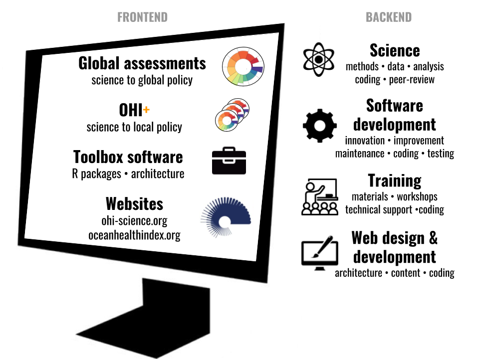

Our story
Over the past four years we have dramatically improved how we do science by embracing open data science practices and tools. We now emphasize communication and work in ways that are more reproducible, streamlined, transparent, collaborative, and open. We’re sharing our story in a publication in Nature Ecology & Evolution because although the transformation to open data science seemed intimidating, we are living proof that it’s possible and we want to encourage others to adopt these practices in their own work.
Publication
Our path to better science in less time using open data science tools (Lowndes et al. 2017, Nature Ecology and Evolution)
Citation: Lowndes JSS, Best BD, Scarborough C,
Afflerbach JC, Frazier MR, O’Hara CC, Jiang N, Halpern BS (2017).
Our path to better science in less time using open data science
tools. Nature Ecology & Evolution, 1. Article number:
0160.
doi:10.1038/s41559-017-0160
Media
- My digital toolbox: Julia Stewart Lowndes (Perkel 2017, Nature)
- The Common Language of Conservation (Nijhuis 2017, The Last Word On Nothing)
- Awash in Sea of Data, Ecologists Turn to Open Access Tools (Rennie 2017, Quanta Magazine)
- Ecologists Are Drowning in Sea of Data. These Tools Could Help (Rennie 2017, WIRED)
- Better Science Faster (Cohen 2017, UCSB Current)
- Scientists transform how complex marine data from the Ocean Health Index is synthesized, communicated (Cohen 2017, Phys.org)
- Transforming how complex marine data is synthesized (University of California - Santa Barbara 2017, ScienceDaily)
- UCSB Scientists Making Waves in Coastal Management (University of California - Santa Barbara 2017, NOOZHAWK)
- For better, faster ocean science, researchers look to the cloud (Mosher 2017, Conservation International blog)
- Better science faster — our Nature Ecology & Evolution pub (Lowndes 2017, OHI-Science blog)
- Ocean Health Index: Better Science In Less Time (Lowndes 2017, NCEAS Roundtable webcast)
- .rprofile: Julia Stewart Lowndes (Kross & O’Briant 2018, rOpenSci blog) (reposted by R-bloggers)
Invited seminars and keynote lectures
- The power of open science: experience from the Ocean Health Index (seminar, National University of Samoa, 2018-05-22)
- The power of open science: experience from the Ocean Health Index (seminar, Moss Landing Marine Labs, USA 2018-04-05)
- The power of open science: experience from the Ocean Health Index (keynote, Royal Belgian Institute of Natural Sciences, Brussels, Belgium 2018-02-27)
- Better science in less time using open data science tools (seminar, California State University Monterey Bay, USA 2017-12-04)
- Reproducible Research: Better science in less time (webinar, DataONE, USA 2017-10-10)
- Better science in less time using data science tools: How open data science tools have improved our science (seminar, California Polytechnical University, USA 2017-09-29)
- Better science in less time — open data science for marine science and management [video] (seminar, NCEAS, USA 2017-05-24)
- Transforming how we approach marine science for management [video] (webinar, EBM Tools Network, USA 2017-05-02)
More science, less time
With the Ocean Health Index, we’ve been measuring and tracking the health of global oceans every year since 2012. By becoming more efficient and reproducible, we’ve greatly reduced the time involved to repeat our work, which lets us focus more on science.
And since it’s all open online, anyone can build directly off our work without reinventing the wheel. Currently there are 20 groups around the world building off our science and our code to assess ocean health in their own jurisdictions.
The Ocean Health Index
The Ocean Health Index (OHI) is a scientific framework to quantify and track the health of our oceans. We are an academic-nonprofit partnership from the National Center for Ecological Analysis and Synthesis (NCEAS) and Conservation International.
Open data science tools enable us to work efficiently and emphasize communication for science and management. Learn more at our overview website oceanhealthindex.org and our science website ohi-science.org.
